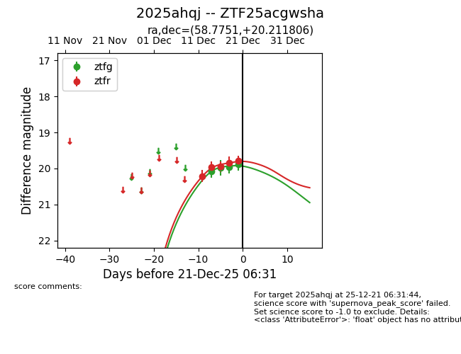
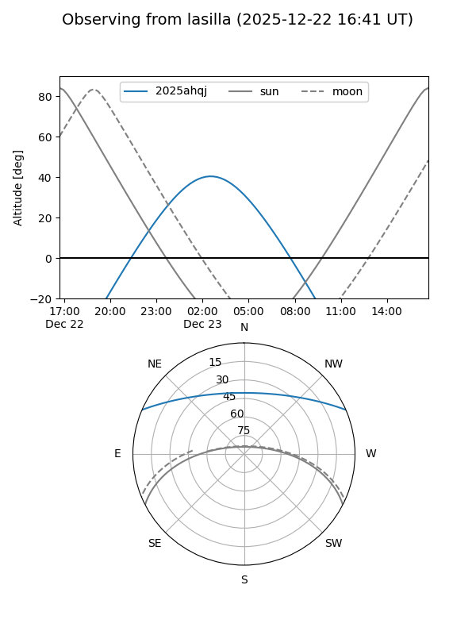
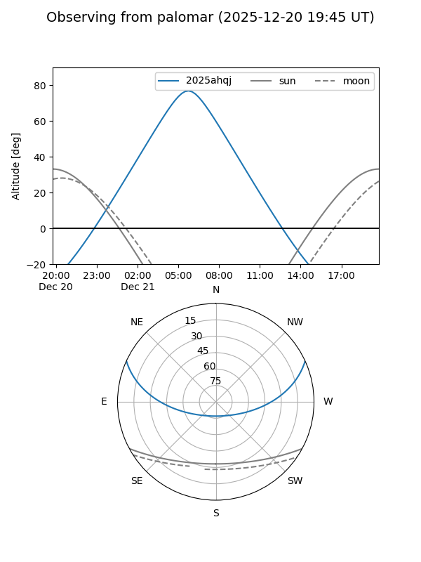
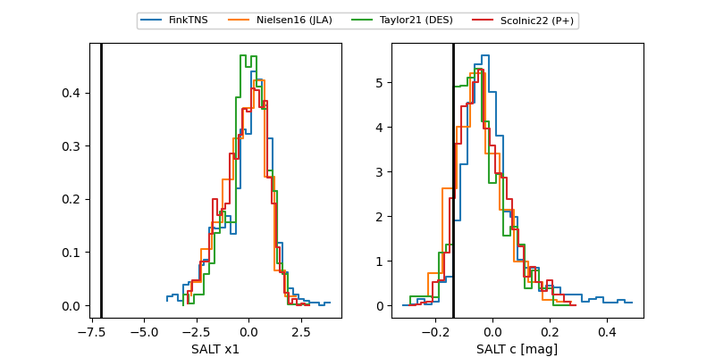

2025ahqj
Target 2025ahqj at 2025-12-20 12:54
Aliases and brokers:
FINK: fink-portal.org/ZTF25acgwsha
Lasair: lasair-ztf.lsst.ac.uk/objects/ZTF25acgwsha
ALeRCE: alerce.online/object/ZTF25acgwsha
TNS: wis-tns.org/object/2025ahqj
YSE: ziggy.ucolick.org/yse/transient_detail/2025ahqj
alt names
ZTF25acgwsha (ztf,fink_ztf)
2025ahqj (tns,yse)
Coordinates:
equatorial (ra, dec) = 58.7751,+20.21181
equatorial (HMS+DMS) = 03:55:06.03,+20:12:42.50
galactic (l, b) = (171.0148,-25.05658)
Flags:
Photometry:
last ztfg=19.89, ztfr=19.78
4 ztfg, 5 ztfr detections
Lightcurve

Visibility


Additional plots
